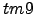

Next: The Hessian Up: Minimisation concepts Previous: The function value Contents Index
The majority of minimisation algorithms also require the gradient at the point in the space represented by the parameter values  . The gradient is a vector of partial derivatives and is defined as
. The gradient is a vector of partial derivatives and is defined as
|  | (theparentequation.1) |
where  is the total number of parameters in the model.
is the total number of parameters in the model.
An example of a powerful algorithm which requires both the value and gradient at current parameter values is the BFGS quasi-Newton minimisation. The gradient is also essential for the use of the Method of Multipliers constraints algorithm (also known as the Augmented Lagrangian algorithm).
Edward d'Auvergne 2010-12-31